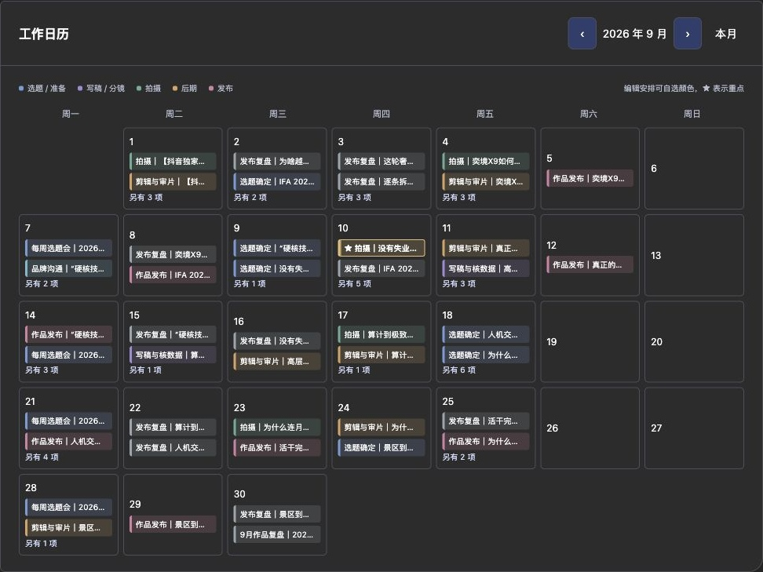
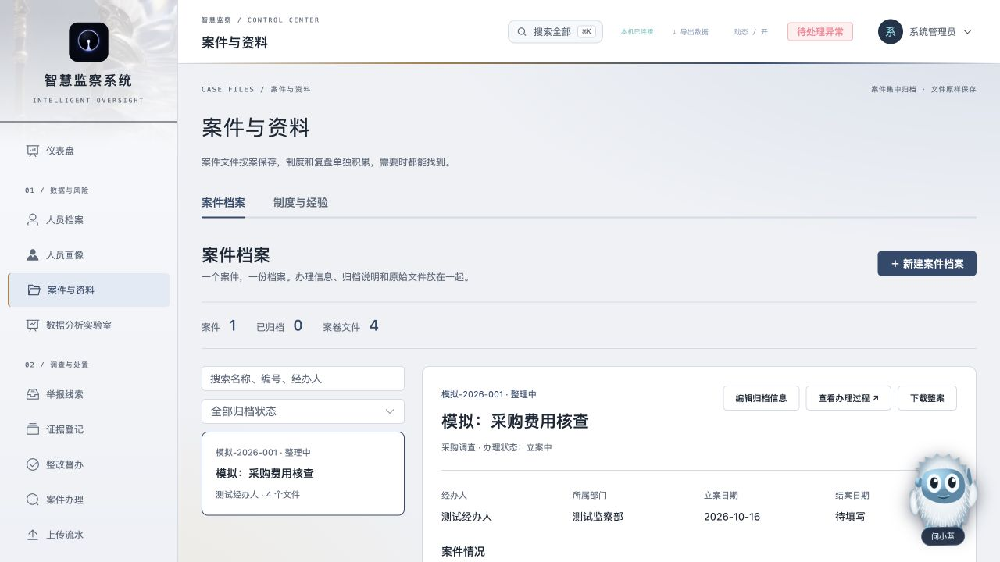
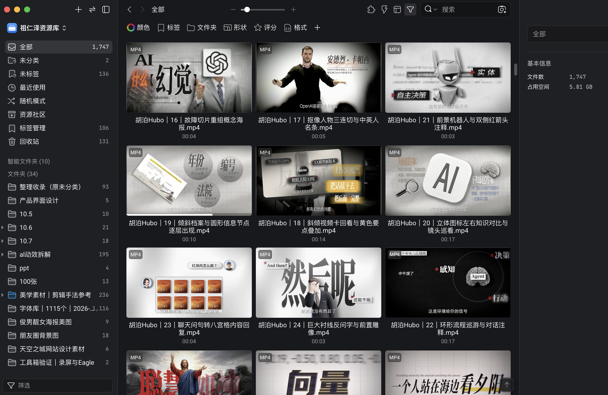
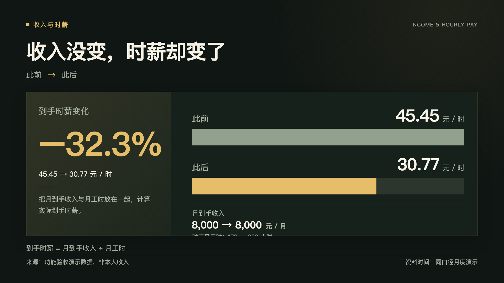

IP工作台
macOS桌面应用，把热点、选题、脚本、分镜、拍摄、排期和商务管理集中到一个软件里，上传文案即可自动生成分镜、花字、转场和音效建议，可调用大模型生成选题和脚本草稿，支持文稿、表格与制作素材的统一管理。日程、拍摄和任务可自选颜色、单独标记重点。支持热点、评论与制作素材的检索、关联和复用。
AIGC作品与自研工具
78秒 · 即梦
改编自本人原创玄幻小说，完成人物设定、分镜设计、AIGC镜头生成与配乐剪辑，统一人物造型，让歌词与画面对应。
分镜图
镜头
1080p成片

macOS桌面应用，把热点、选题、脚本、分镜、拍摄、排期和商务管理集中到一个软件里，上传文案即可自动生成分镜、花字、转场和音效建议，可调用大模型生成选题和脚本草稿，支持文稿、表格与制作素材的统一管理。日程、拍摄和任务可自选颜色、单独标记重点。支持热点、评论与制作素材的检索、关联和复用。

为品牌监察部门开发的案件材料管理系统，入选品牌内部AI创新大赛前十。

Eagle分类收录1700余件素材，其中包含1100余个字体文件；剪辑参考按字幕、花字、转场等类别管理。

填写同口径数据，自行修改标题、重点色和来源。先展示此前，再展示此后，最后突出变化；预览与导出共用同一画面。
支持工资项目拆分、月工时计算与到手时薪对比，导出横屏或竖屏 H.264 MP4，作为口播中的数据画面。
播放 8 秒功能演示 ↗演示数字用于验证功能，非本人收入或项目业绩。